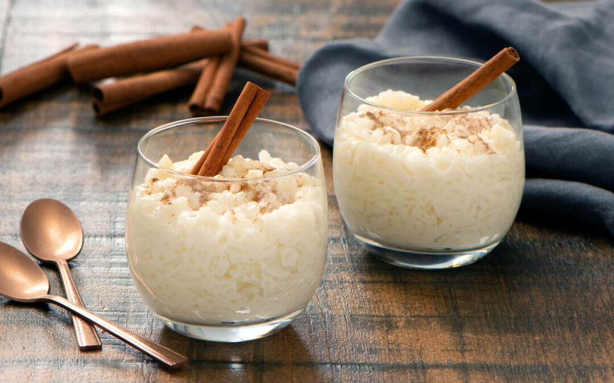
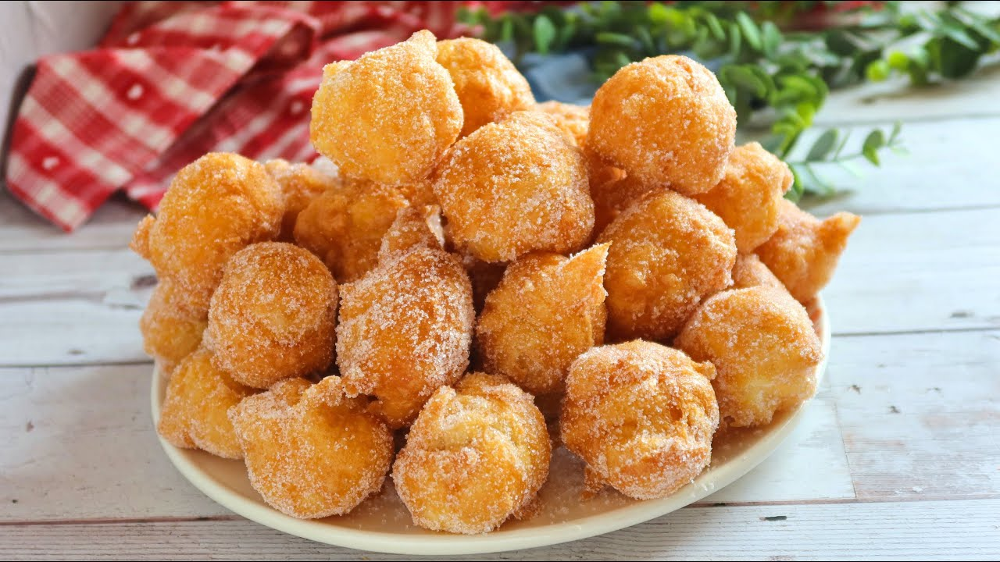
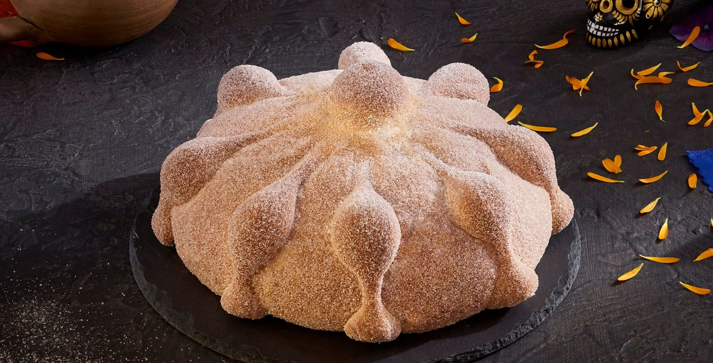

Tu paraíso de postres exquisitos. En nuestro sitio web, te invitamos a explorar un mundo de sabores irresistibles y creaciones culinarias únicas. Desde los clásicos favoritos hasta las innovaciones más sorprendentes, aquí encontrarás recetas, consejos y todo lo que necesitas para convertirte en un maestro de los postres. Ya seas un apasionado de la repostería o un aficionado en busca de inspiración, en Postres Deliciosos hay algo delicioso para cada paladar. ¡Embárcate en este dulce viaje con nosotros y descubre el arte de la repostería!
Postres más populares en nuestra region
Flan
El flan es un postre tradicional muy popular en muchas culturas, especialmente en la cocina española y latinoamericana. Consiste en una crema a base de huevos, leche y azúcar, cocida al baño maría hasta obtener una textura suave y firme. El flan se caracteriza por su caramelo líquido en la parte superior, que se crea al derretir azúcar en el fondo del molde antes de añadir la mezcla de flan. Al desmoldarlo, el caramelo se desliza sobre la crema, creando un contraste delicioso de sabores y texturas. Este postre es conocido por su consistencia cremosa y su delicado sabor dulce.
Pastel de 3 leches con fresa
El pastel de tres leches es un postre tradicional de la repostería latinoamericana, conocido por su textura húmeda y esponjosa. Este pastel es único debido a su preparación, que implica empaparlo en una mezcla de tres tipos de leche: leche evaporada, leche condensada y crema de leche (o nata). El proceso comienza con la elaboración de un bizcocho ligero y aireado, que luego se perfora para permitir que la mezcla de leches lo impregne por completo, resultando en un pastel extremadamente jugoso y sabroso. Generalmente, se cubre con una capa de crema batida o merengue, y a menudo se adorna con frutas frescas o canela. El pastel de tres leches es apreciado por su dulzura y su inconfundible humedad, lo que lo convierte en un favorito para muchas celebraciones y ocasiones especiales.
Arroz con leche
El arroz con leche es un postre tradicional en muchas culturas, especialmente popular en España y América Latina. Este dulce se elabora cocinando arroz en leche azucarada y aromatizada, generalmente con canela y cáscara de limón o naranja. A veces, también se le añaden pasas o vainilla para enriquecer su sabor. La preparación implica cocinar el arroz a fuego lento en la leche hasta que alcance una consistencia cremosa y suave. El resultado es un postre reconfortante, con una textura rica y un sabor dulce y especiado. El arroz con leche se sirve tanto frío como caliente, y a menudo se espolvorea con canela molida antes de ser presentado. Es un postre sencillo pero delicioso, ideal para disfrutar en cualquier ocasión.

Buñuelos
Los buñuelos pueden ser simples o rellenados con una variedad de ingredientes, como crema, chocolate, frutas o queso. También se pueden espolvorear con azúcar, canela, o bañarse en miel o sirope después de la fritura para añadirles un toque extra de dulzura. Este postre es muy popular durante festividades y celebraciones, y su receta puede variar significativamente según la región y las tradiciones locales.

Pan de muerto
El pan de muerto es un pan dulce tradicional mexicano, elaborado especialmente para la celebración del Día de los Muertos, que tiene lugar el 1 y 2 de noviembre. Este pan se distingue por su forma y decoración, que simbolizan elementos relacionados con la muerte y la vida. La masa del pan de muerto se elabora con ingredientes típicos de los panes dulces, como harina, azúcar, huevos, mantequilla y levadura. Suele estar aromatizado con esencia de azahar, que le da un sabor característico.

¡Gracias por explorar nuestro mundo de delicias dulces! Pero esto es solo el comienzo. Te invitamos a descubrir más recetas irresistibles aqui. Pasteles exquisitos y todo lo que hay en medio, en nuestro sitio encontrarás inspiración para endulzar tu vida. ¡No esperes más para sumergirte en el universo de sabores de Postres Deliciosos!